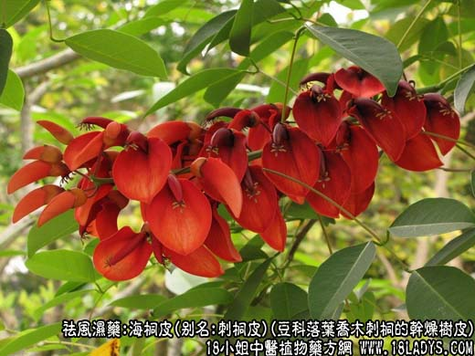
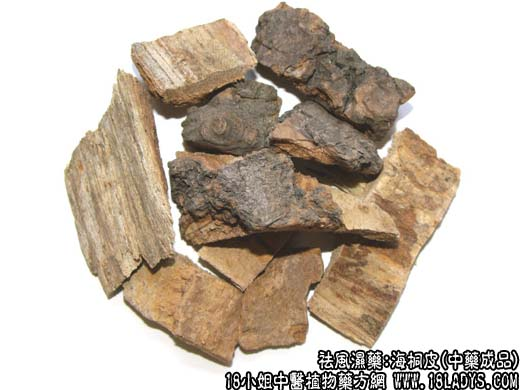
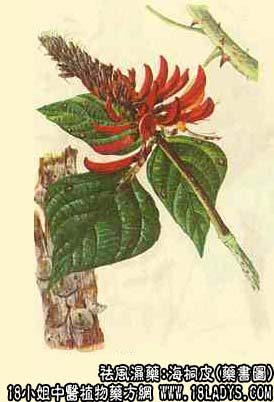

海桐皮为少常用中药。始载于《开宝本草》。
别名：钉桐皮、鼓桐皮、刺桐皮。
来源：为豆科落叶乔木植物刺桐的干燥树皮。均为野生。
产地：主产于浙江宁波、临海、兰溪、云南富民、福建、广西等地。
性状鉴别：干皮呈半筒状或板片状，长约30～60厘米，厚约1～2毫米，外表灰棕色或灰黑色，有稀疏纵裂纹及较密的黄色皮孔，边缘不整齐，微突起或平钝，皮上有大形钉刺、刺尖有时被磨去，可以剥落；基部圆形或长圆形而纵向延长；内表面黄棕色或红棕色，平滑，有细纵纹。质硬而韧、易纵裂、不易横断，断面黄白色或淡黄色，富纤维性。气微香、味苦。以皮张大，钉刺多者为佳。
主要成分：树皮含刺桐灵碱，氨基酸和有机酸。种子油含饱和有机酸36.7%与不饱和有机酸（油酸、亚油酸）63.3%，另含下箴刺桐碱。
功效与作用：海桐皮水浸剂（1：3）在试管内对堇色毛癣菌、许兰氏黄癣菌、铁锈色小芽胞癣菌、腹股沟表皮癣菌等皮肤真癣均有不同程度的抑制作用。亦有谓海桐皮在体外对金黄色葡萄球菌有抑制作用。
炮制：用清水浸泡，洗净泥屑，切成小块，晒干。
性味：苦、辛、平。
归经：入肝、脾经。
功能：祛风湿，通经络，杀虫。
主治：风湿痹病、痢疾、牙痛、疥癣。
临床应用：海桐皮能入肝经血分，为祛风除湿要药。
1、治风湿两腿肿痛：常与薏苡仁、防风、羌活等配伍，具有除湿消肿行水，活血通络之功。常用于关节肿痛、百节拘挛，屈伸不直等症，如海桐皮散。
2、治大风疾：常与知母、金毛狗脊等配伍，具有祛风活血，强筋壮骨之功，常用于腰膝痛不可忍，脚挛不能伸举，全身关节痛等症。
使用注意：1、血虚者不宜服；2、血少火炽者禁用。
用量：6～12g，或浸酒。外用：煎汤洗或研磨调敷。
处方举例：海桐皮散：海桐皮30g，羚羊角粉、薏苡仁各60g，防风、羌活、肉桂（去皮）、赤茯苓、熟地黄各30g、槟榔30g，上药共为散。每服9g，加生姜五片同煎七分服。
注：商品中的海桐皮有很多品种，彼此性状各不相同，但各地均作药用，习惯已久。然而吉林、河南、安徽、山西、四川、陕西、甘肃等地所用的“海桐皮”与正品不同，各有特色，他们之间的差异需要进一步研究。